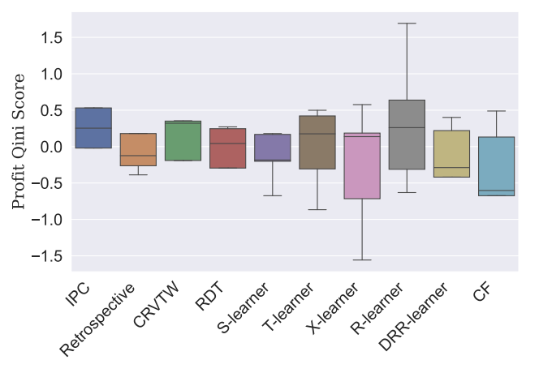

# Google colab setup.
import subprocess
def setup_google_colab_execution():
subprocess.run(["git", "clone", "https://github.com/bookingcom/uplift-modeling-for-marketing-personalization-tutorial"])
subprocess.run(["pip", "install", "-r", "uplift-modeling-for-marketing-personalization-tutorial/requirements-colab.txt"])
subprocess.run(["cp", "uplift-modeling-for-marketing-personalization-tutorial/tutorial/notebooks/utils.py", "./"])
running_on_google_colab = False # Set this to true if you're running this notebook on google colab
if running_on_google_colab:
setup_google_colab_execution()
Incremental Profit per Conversion (IPC) Method#
1. Introduction#
In e-commerce settings, promotions such as discounts or coupons often incur costs only when a conversion occurs. Traditional uplift modeling approaches focus on conversion rates, but they do not directly account for profit. To address this, Incremental Profit per Conversion (IPC) focuses on the incremental profit generated by a promotion, making it a more relevant metric for businesses focused on profitability rather than just increasing conversions. Link to paper.
2. The IPC Formula#
For a given context ( \(\mathbf{x}\) ), IPC is defined as:
Where:
( \(\pi\) ) represents profit, defined as ( \(\text{revenue}\) - \(\text{cost}\) ).
( \(C\) ) indicates conversion (1 for conversion, 0 otherwise).
( \(T\) ) is the treatment indicator (1 for promotion applied, 0 for no promotion).
This formula estimates the incremental profit per conversion given a particular context. The higher the IPC, the more effective the promotion in generating profit.
3. Response Transformation Method#
The IPC method relies on a response transformation that only uses converted data. This transformation mitigates noise from non-converted data and improves model performance by focusing only on instances where profit is realized.
The Response Transformation Formula#
For each instance, the transformed response variable ( \(Z_i\) ) is defined as:
Key Advantages#
Profit-Focused: IPC directly models profit, aligning with business objectives.
Efficient: By only using converted data, it reduces noise and class imbalance, leading to faster training times and more robust predictions.
Applicability: The method is especially useful in e-commerce scenarios where only conversions incur costs (e.g., coupons, discounts).
4. Python Implementation of IPC#
Below is a code example demonstrating the IPC method in Python:
Step 1: Collect Data#
import numpy as np
import pandas as pd
from sklearn.model_selection import train_test_split
from lightgbm import LGBMRegressor
import matplotlib.pyplot as plt
# Step 1: Generate Synthetic Data
np.random.seed(42)
n_samples = 10000
n_features = 5
# Generate random features
X = np.random.normal(0, 1, size=(n_samples, n_features))
# Simulate treatment assignment (0: control, 1: treatment)
T = np.random.binomial(1, 0.5, n_samples)
# Simulate conversion (1: converted, 0: not converted)
C = (np.random.rand(n_samples) < 0.3 + 0.2 * (X[:, 0] > 0)).astype(int)
# Simulate profit for each instance (only if converted)
revenue = np.exp(X[:, 0] + X[:, 1]) # Revenue follows an exponential distribution
cost = np.random.normal(10, 2, n_samples) * T # Cost applies only when treated
profit = revenue - cost
profit[C == 0] = 0 # Profit is zero for non-converted instances
Step 2: Apply Response Transformation#
def response_transformation(profit, T, C, propensity_treated=0.5, propensity_control=0.5):
Z = np.zeros_like(profit)
for i in range(len(profit)):
if C[i] == 1:
if T[i] == 1:
Z[i] = profit[i] / propensity_treated
else:
Z[i] = -profit[i] / propensity_control
return Z
Z = response_transformation(profit, T, C)
# Create DataFrame for easier handling
df = pd.DataFrame(X, columns=[f'feature_{i}' for i in range(n_features)])
df['T'] = T
df['C'] = C
df['profit'] = profit
df['Z'] = Z
# Filter out non-converted data
df_converted = df[df['C'] == 1]
Step 3: Train a Regression Model to Estimate IPC#
X_converted = df_converted.drop(columns=['T', 'C', 'profit', 'Z'])
y_converted = df_converted['Z']
# Train-test split
X_train, X_test, y_train, y_test = train_test_split(X_converted, y_converted, test_size=0.3, random_state=42)
# Train LightGBM model
model = LGBMRegressor()
model.fit(X_train, y_train)
# Predict IPC for the test set
ipc_predictions = model.predict(X_test)
[LightGBM] [Info] Auto-choosing col-wise multi-threading, the overhead of testing was 0.000200 seconds.
You can set `force_col_wise=true` to remove the overhead.
[LightGBM] [Info] Total Bins 1275
[LightGBM] [Info] Number of data points in the train set: 2783, number of used features: 5
[LightGBM] [Info] Start training from score -10.163055
Step 4: Evaluate and Visualize Results#
plt.figure(figsize=(10, 6))
plt.hist(ipc_predictions, bins=50, alpha=0.7, label='Predicted IPC')
plt.title('Distribution of Predicted Incremental Profit per Conversion (IPC)')
plt.xlabel('Predicted IPC')
plt.ylabel('Frequency')
plt.legend()
plt.show()
5. Comparison of IPC with other Uplift Models#
The results below show that IPC performs on par or better than other algorithms, taking 100 times less time if you use non-converted data. Below we can see the comparison between methods extracted from the IPC paper.
